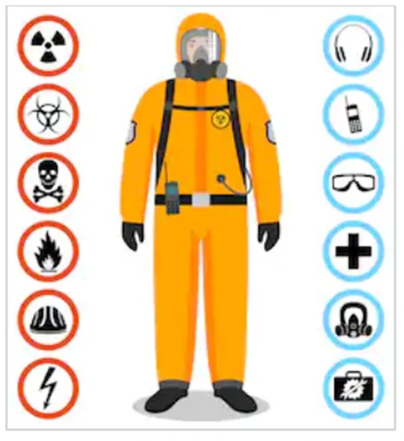

Riesgos físicos
Corresponden a fenómenos físicos resultantes de procesos industriales y del funcionamiento de máquinas, equipos y herramientas con capacidad de generar variaciones en las condiciones naturales de temperatura, humedad, ruido, vibraciones, presiones, hhradiaciones e iluminación.

Riesgos químicos
Se trata de todo riesgo generado por la exposición a sustancias químicas que pueden ocasionar efectos agudos o crónicos en el trabajador como enfermedades.